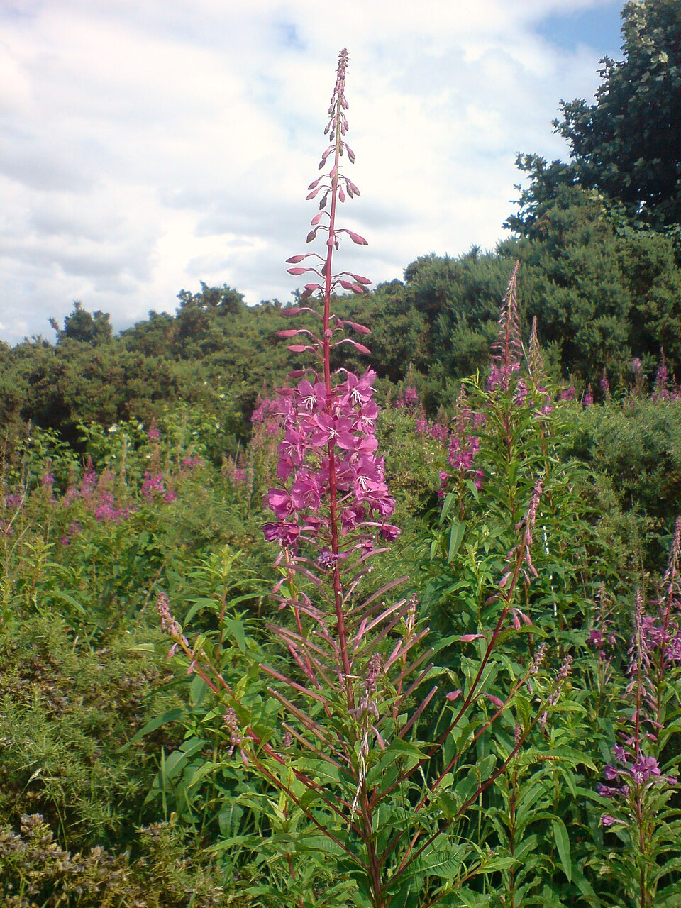

Photo by: Callum1234
The shoots, young leaves, flowers, and flower buds can be eaten raw or cooked. The shoots, young leaves, and flower buds can be sauteed like a vegetable. The pith from the stem can be used as a thickener in dishes like soup.
Small handful of fireweed flowers and/or leaves
1 c boiled water
Add the fireweed flowers and/or leaves to a cup and add the boiled water. Let steep for 15 minutes. Add sweetener to taste.